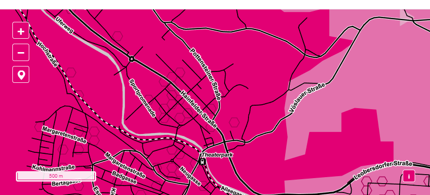
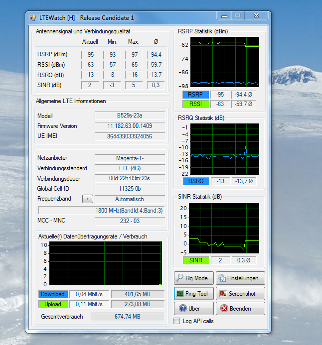
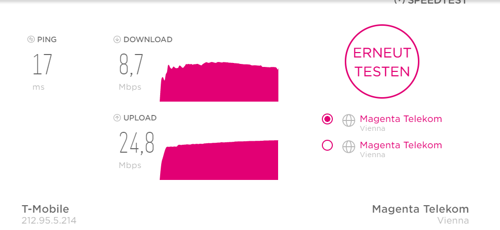

Hallo zusammen
Ich habe das Problem das mein Internet Magenta flex 75 sehr langsam ist.
Habe zuvor einen anderen Vertrag mit 50mb/s auch bei Magenta. Hatte die Geschwindigkeit auch meistens.
Jetzt müsste ich 75mb/s haben habe aber nur zwischen 20 und 50 mb/s meistens so um die 30.
Habe eine neuen Alcatel flex box bekommen . Meinen alten huawei würfel und den Alcatel getestet beide die gleichen Werte.
Empfang ist sehr gut 2 bis 3 Striche bei lte. 2,4 Ghz Kanal habe ich auch alle probiert den besten eingestellt. Ps kanal 11 ist auch zeitweise belegt.
Auch mit Kabel am Pc angeschlossen wird es nicht besser.
Das witzige ist gleich nach freischalten meines flex 75 vertrages hatte ich den ganzen tag die volle Geschwindigkeit..
Habt ihr noch eine Idee?
Hey @skorpion81
Dein neuer Vertrag ist im Netzwerkmanagement in Klasse G und dein alter Tarif wahrscheinlich noch in Klasse B. Daher könnte die verringerte Bandbreite kommen.
Der Alcatel ist kein sehr zeitgemäßer Router, da dieser unter Umständen nicht so viel aus dem Netz rausholen kann. Interessant wäre es, ob du den kleinen Huawei E5170 oder den großen Huawei B529 hast. Der E5170 ist technisch praktisch gleich wie der Alcatel HH40V. Sollte bei dir LTE-A/4G+ verfügbar sein könnte man die schlechtere Nutzungsklasse eventuell mit einem besseren Router ausgleichen.
LG NTM
Ja und es ist halt wieder Primetime.
Im Herbst ist die Auslastung immer deutlich höher, weil halt mehr gesurft wird.
Mich würden trotzdem die Empfangswerte interessieren.
Die findest du im Routermenü. Kannst die mal hier bitte posten, denn die Striche sagen nicht soviel aus.
Oder du hältest den Würfel mal raus - dann musst du immer alle Striche haben und machst den Test noch einmal.
Danke!
LG
Christian
[***] Magenta!!!
vor 7 Stunden schrieb Martin Kirchmeyr:
War das nur gestern oder hast du immer solche Werte.
Schreib doch ein bissi mehr, damit wir unterstützen können.
Danke.
vor 23 Stunden schrieb NTM:Hey @skorpion81
Dein neuer Vertrag ist im Netzwerkmanagement in Klasse G und dein alter Tarif wahrscheinlich noch in Klasse B. Daher könnte die verringerte Bandbreite kommen.
Der Alcatel ist kein sehr zeitgemäßer Router, da dieser unter Umständen nicht so viel aus dem Netz rausholen kann. Interessant wäre es, ob du den kleinen Huawei E5170 oder den großen Huawei B529 hast. Der E5170 ist technisch praktisch gleich wie der Alcatel HH40V. Sollte bei dir LTE-A/4G+ verfügbar sein könnte man die schlechtere Nutzungsklasse eventuell mit einem besseren Router ausgleichen.
LG NTM
Hallo
Danke erstmal für die schnellen Antworten.
Ich habe den Huawei B529 und den Alcatel beide Geräte liefert den selben download ab. Haben aber auch schon 50 bzw 75 mb/s zusammengebracht.
Wenn ich jetzt wirklich in eine schlechtere Klasse eingestuft bin als vorher obwohl ich einen höhern Vertrag habe würde ich gerne wieder in meinen alten wechseln wo der download bei stabilen 50mb/s liegt.
Das derzeitige Internet ist so nicht brauchbar für fast 30 euro erwarte ich mir ein Internet das funktioniert.
Der Empfang ist immer der Gleiche egal ob draussen oder drinnen habe alle Räume probiert.
OK, das Signal ist nicht das beste, denn bei RSRP sieht man, dass der Pegel relativ weit unten ist.
Aber SINR ist gut und das bedeutet, der Pegel ist zwar mäßig aber die Qualität gut.
Was mich wundert - du hast schon Mittag ziemlich schlechte Werte.
Entweder ist eine Schule/Firma o.ä. in der Nähe und viele surfen in der Mittagspause oder du hast Mittag einfach schon eine allgemeine Überlastung in deinem Bereich.
Was mich ganz und gar wundert ist, dass der Empfang draußen nicht besser ist.
Also RSRP müsste draußen um ein paar db niedriger sein - gibts da echt keine Verbesserung?
Hallo
Ja du hast recht habe eine Schule in der nähe.
Anbei die Werte von draussen. Ich hatte mit meinem alten Vertrag fast immer zwischen 40 und 50 mb/s.
Mit Flex 75 naja nichts gutes. Gibts den die möglichkeit wieder in Netzwerkman. Klasse B zu kommen.
Ich brauche das Internet auch für die Arbeit bisher hats super funktioniert seit der umstellung nicht mehr.
danke
Oha - RSRP ist draußen deutlich schlechter.
Das zeigt, dass der Sendemasten irgendwo auf der anderen Seite sein muss.
RSRP von -105db ist schon sehr schlecht. Da muss es fast zwangsweise Probleme geben.
Bitte den Test auf einer anderen Seite des Hauses mal machen oder den Router draußen anstecken.
Oder mal wirklich ins Auto und ganz woanders in Betrieb nehmen, damit man mal eine Bandbreite sieht.
Die Verwendungsklasse ist mit dem Vertrag gebunden, die lässt sich nur ändern oder anpassen, wenn man ein anderes Produkt verwendet.
Aber bitte mach zuvor mal einen Text mit Ortsveränderung, damit wir mal wissen, was alles geht.
LG
Christian
Hallo
Danke
Anbei ein paar verschiedene Standorte die mir Möglich sind das Gerät aufzustellen.
Beim ersten und auch beim Letzten hast du die besseren Werte.
Gab es da bei der Performance auch Unterschiede?
wobei das bild im ersten Screenshot der bevorzugte Standort sein könnte.
Leider keine nennenswerte Verbesserung über 10 mb/s komme ich heute nicht hinaus.
Da bleibt wohl nur ein wechsel in eine andere klasse wenn dies möglich ist. Habe bereits ein Email an den Kundenservice geschrieben dauert meistens bis da Antwort kommt ist meine 2 Wochen rücktritsrecht auch schon weg.
Tja... Das sieht ja eh schon besser aus.
Was wurde jetzt verändert?
Muss allgemein wieder einmal ein Problem sein. Das Kastl (4+ wird angezeigt) steht immer an der selben Stelle. Heute geht überhaupt nichts. Speedtest hat 3 x abgebrochen. Siehe Bildchen vom Netztest >>>>>
Und das andere dazu >>>
Na ja aber du hast aktuell einen eher schlechten Signalpegel und auch die Qualität ist eher bescheiden.
Denk doch mal nach, ob du nicht einen besseren Platz findest?
Hallo
Mal eine andere frage warum ist der Kundenserice so langsam geworden? Meine mails sind bis jetzt noch nicht beantwortet.
Hast du schon die Hotline angerufen - evtl. geht das schneller.
Gute Erfahrungen hab ich auch mit dem Facebook Chat gemacht - als Vorschlag zur Alternative.
LG
Christian
Danke
die hotline kostet aber was da ich kein T mobil Handyvertrag habe.
?
Also in der Regel gibt es doch eh schon viele Freiminuten oder Flat Rate beim Telefonieren - auch bei den anderen Anbieter.
Da sollte das Telefonieren doch drinnen sein.
Aber wenn nicht, dann versuche doch den Chat über FB oder WhatsAPP.
LG
Christian
Ich habe gestern erst mein mobiles Internet bekommen mit einen 125 mbit Vertrag und schaffe nur 20 wenn überhaupt.
Sollte eigentlich eine gute Netzabdeckung haben und hab 5 striche und 4g+


Bearbeitet von pschiffner
Ja Pegel geht. Sinr ist aber eher bescheiden.
Bitte teste mal zu unterschiedlichen Zeiten.
Und schau mal mit anderen Standorten des Modems, ob Rsrp noch niedriger wird und Sinr mehr ins Plus geht v
LG Christian
Hallo zusammen
Ich habe das Problem das mein Internet Magenta flex 75 sehr langsam ist.
Habe zuvor einen anderen Vertrag mit 50mb/s auch bei Magenta. Hatte die Geschwindigkeit auch meistens.
Jetzt müsste ich 75mb/s haben habe aber nur zwischen 20 und 50 mb/s meistens so um die 30.
Habe eine neuen Alcatel flex box bekommen . Meinen alten huawei würfel und den Alcatel getestet beide die gleichen Werte.
Empfang ist sehr gut 2 bis 3 Striche bei lte. 2,4 Ghz Kanal habe ich auch alle probiert den besten eingestellt. Ps kanal 11 ist auch zeitweise belegt.
Auch mit Kabel am Pc angeschlossen wird es nicht besser.
Das witzige ist gleich nach freischalten meines flex 75 vertrages hatte ich den ganzen tag die volle Geschwindigkeit..
Habt ihr noch eine Idee?
Hallo hast du schon geschaut ob irgendeine anderes wlan deines stört
?
du kannst das mit einem Wifi analyser testen gibts im windows store gratis.
Hab schon gestern am 17 uhr und am 22 uhr und auch am 1 Uhr früh so wie heute ab 9 uhr jede stunde immer das selbe hab auch die Box mehrmals umgestellt. Es stört auch kein anderes Wlan habs auch mit dem Lan kabel probiert immer das selbe obwohl mein upload bei fast 25 mbit ist 
Das ist aber schon komisch, dass sich die Werte gar nicht verändern, wenn du das Modem an verschiedene Orte stellst.
Hast mal versucht, das Modem aus dem Fenster zu halten. Klingt lustig - aber spätestens dann sollten die Werte anders und i.d.R. besser werden.
Hab ihn gerade rausgestellt aber da sind die werte nur schlechter geworden
Alles klar.
Dann kommt das Signal von der anderen Seite des Hauses. Letztendlich kannst eh nur testen.
Interessent wäre schon, wie sich die Performance mit einem besseren Signal verändert.
LG Christian
Hallo @skorpion81 und @pschiffner ,
vielen Dank für eure Beiträge.
Unsere Community Mitglieder bemühen sich immer, mit Rat und Tat zur Seite zu stehen.
Allerdings kommen auch sie manchmal an ihre Grenzen, vor allem, wenn es darum geht, einen individuellen Fall zu prüfen.
Daher bitte ich euch, zur Prüfung eures Falls direkt unser Technikteam unter 0676 2007777 zu kontaktieren. Sie können den Sachverhalt prüfen und eine Lösung erarbeiten.
LG Andrea
Hallo
Gibt es eine möglichkeit für mich herauszufinden in welcher Nutzungsklasse ich jetzt bin? Habe lt Magenta meinen alten Vertrag wieder download sieht auch meistens sehr gut aus hat aber schwankungen. werte zwischen 30 und 60 mb/s . Solange es so bleibt kann ich damit leben.
Ich glaub das ist auch eine Frage, die besser im Bereich der telefonischen Unterstützung angesiedelt ist.
Am 13.10.2019 um 13:33 schrieb skorpion81:Gibt es eine möglichkeit für mich herauszufinden in welcher Nutzungsklasse ich jetzt bin?
Diese Antwort findest du direkt in der detaillierten Tarifbeschreibung.
Für alte Tarife:
https://www.magenta.at/alte-tarife-tmobile-upc/#alte-datentarife
https://www.magenta.at/handytarife/alte-tarife/#alte-internettarife
Bei den aktuellen Tarifen muss du einfach auf die Homepage gehen und dort aufs i klicken.
{kind=link}
{kind=link}
{kind=link}
{kind=link}
{kind=link}
{kind=link}
{kind=link}
{kind=link}
{kind=link}
{kind=link}
{kind=link}
{kind=link}
{kind=link}
{kind=link}
{kind=link}
{kind=link}
{kind=link}